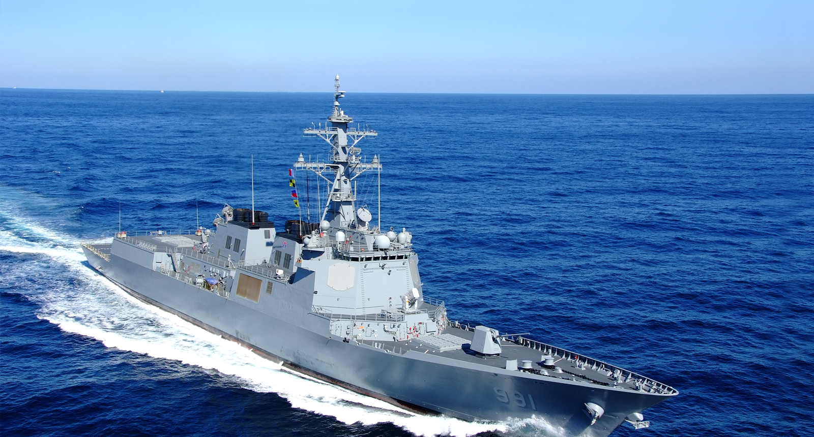

 HD현대중공업
기업블로그
HD현대중공업
기업블로그


HD현대, 세계 최대 가스展서 친환경 미래기술 선보여
‘가스텍2023’ 참가, 암모니아·수소 관련 첨단기술력 소개 HD현대가 세계 최대 가스 행사인 가스텍(Gastech)에서 친환경 가스선의 미래기술을 선보여요. HD현대는 이달 5일(화)부터 8일(금)까지 싱가포르에서 열리는 ‘가스텍2023’에 참가한다고 밝혔어요. 올해로 51회째를 맞이하는 이 행사에는 전 세계 100여 개국 750개 기업, 4만여 명이 참관할 것으로 예상돼요. HD현대 정기선 사장을 비롯한 최고경영진과 영업, 연구개발, 엔지니어링 분야 50여 명의 임직원들이 참석, 선사와 선급 등 글로벌기업들을 만나 첨단 기술을 소개하는 한편 조선 및 해운산업의 발전 방안을 논의할 계획이에요. 또한 약 100평 규모의 부스를 마련해 LNG선과 LPG선, 재액화장치, 이중연료추진 엔진 등의 모형을 전시, 고객 및 참관객들을 맞이해요. 행사 기간 HD현대는 글로벌 선급 및 기업들과 총 16건의 기술인증 획득 및 기술협력 MOU 체결을 진행해요. 특히 탄소 배출이 없어 차세대 친환경 선박으로 꼽히는 암모니아 및 수소 선박의 진일보된 기술력을 공개해요.


HD현대중공업TV

정말 이것이 궁금하다_초대형 선박에 들어가는 블록의 개수는?_[호기심Q 25편]
#도르마무 #블록개수 #K조선 #레고 세계 최대 조선 강국 K조선 대한민국. 매일 매일 많은 선박들이 건조되고 있는데요. 초대형 선박은 우리가 알고 있는 레고블록과 같이 차곡차곡 쇠 블록을 쌓아서 만들어진다고 하는데요. 그럼 이 블록은 도대체 몇개로 구성돼 있을까요? 우리 같이 하나하나 세어 봅시다~ ⭐호기심Q 개.봉.박.두 !⭐


휴가철 방심은 안전 사고의 지름길!
어린 아이가 있는 가정에서는 ‘찰과상’을 자주 접하게 돼요. 넘어져서 생긴 상처의 경우, 흙이나 풀 같은 이물질이 묻기 쉬어요. 이런 이물질은 상처의 회복을 더디게 하고, 염증을 일으킬 수 있기 때문에 반드시 제거해야 해요. 이물질 제거를 위해서는 흐르는 식염수로 닦아내는 것이 가장 좋지만 식염수가 없다면 수돗물을 이용할 수도 있어요. 피가 계속 난다면 거즈로 덮고 반창고를 붙여서 고정한 다음 손으로 출혈 부위를 눌러주면 돼요. 상처에는 일반 탈지면보다는 거즈 종류를 사용하는 것이 좋아요. 미세한 솜은 노출된 상처에 붙어서 오히려 이물질로 작용할 수 있기 때문이에요.
울산광역시 동구 방어진순환도로 1000 대표전화 : 052-202-2114
Copyright ⓒ 2015 HD Hyundai Heavy Industries Co., Ltd.All Rights Reserved.